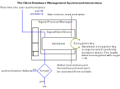

About
Occultus (meaning “hidden, secret.” in Latin) is a libsignal based library for building platforms which help you stay connected with your friends, family, and other devices, securely. All the communication with Occultus is End-To-End Encrypted. It was created by Asheesh Sharma as a generic E2EE system for building much more complex systems such as secure internet of things, smart homes, and chats.
Internally, Occultus uses libsignal by Open Whisper Systems for the actual data encryption. With Occultus, the goal was to wrap around libsignal-node; from its "messy" inticrate details and provide:
- an encrpyted client-side interface to store important information like chats, and Signal protocol's own handshake related stuff;
- a secure client-side server interface to handle key sharing;
- a Whatsapp style message encryption for groups;
- an all in typescript solution! ☝😎
For implementation details please refer to the Occultus Class.
Security check status
The checklist is based on this medium article. Note that not required does not imply that the security issues will not be considered in the future. Most of them deal with server side communication which shall be implemented within SignalServerStore interface or outside in its implimentation class.

- Escape HTML, JS and CSS output not required

- Limit concurrent requests using a middleware not required
- Prevent evil RegEx from overloading your single thread execution not required
Re-generate client-side store keys randomly b/w writes.
The database automatically generates a new encryption key when something is written to it. For performance and security reasons, this is done randomly with a probability of 0.5 which is not configurable.
Avoid DOS attacks by explicitly setting when a process should crash not required

- Linting rule checks
- Prevent query injection vulnerabilities with ORM/ODM libraries
Avoid module loading using a variable
The store database requires a path which is a variable supposed to be configured by the user. According to this vulnerability, malicious user input could find its way to the database's path variable which can be used to tamper the file. So, although we can't take away this configuaration flexibility, but we can hide the database as a private during runtime. This is what has been done.
Take extra care when working with child processes not required
- Prevent unsafe redirects not required

- Avoid JavaScript eval statements not required
- Run unsafe code in a sandbox not required

- Avoid publishing secrets to the npm registry not required
- Modify session middleware settings not required
- Configure 2FA for npm or Yarn not required
- Hide error details from clients
- Adjust the HTTP response headers for enhanced security
- Extract secrets from config files or use packages to encrypt them

- Validate incoming JSON schemas
- Limit payload size using a reverse-proxy or a middleware

Constantly and automatically inspect for vulnerable dependencies
Can be done by running
npm auditandnpm run snykfor a snyk report.

Avoid using the Node.js crypto library for handling passwords, use Bcrypt
Crypto's Encryption keys, are now hashed with Bcrypt. This requires for the user to provide a password. The database first authenticates over the provided password using bcrypt before it can start interacting with the Store class. This makes it more difficult for the outsider to decrypt the actual database which for all intended purposes, a JSON string. 
All that is needed however, is to make sure that the database and the key is stored somewhere safe.
- Support blacklisting JWT tokens not required
- Limit the allowed login requests of each user not required